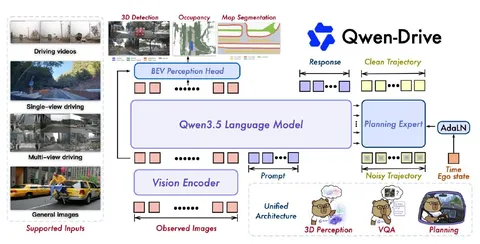

Современные подходы к автономному вождению часто разделяют восприятие, предсказание и планирование на отдельные модули. Но сейчас всё больше моделей переходят на end-to-end-предсказание с дообучением VLM под задачи вождения.
В частности, 31 августа команда Alibaba выпустила Qwen‑Drive‑1.0 — собственную модель в этой области. Это интересный релиз, потому что команда Qwen — один из безусловных лидеров в мире опенсорсных VLM, но это её первый заход в модели для вождения.
Авторы стартуют с Qwen3.5-4B и дообучают её, исходят из ключевых дизайн-принципов:
Чтобы достичь этого, предобученную VLM усилили двумя элементами:
Qwen‑Drive‑1.0 обучают в четыре стадии: первые две — для персепшна, следующие — для планнера.
1. Претрейн перспешна. Замораживают основную модель, обучают только новую BEV-голову на задачах 3D-детекции, occupancy, сегментации.
2. Совместное обучение персепшна и VQA. Размораживают визуальный энкодер и VLM. Обучают модель одновременно на данных для 3D-персепшна и «вопросах-ответах» по сцене вождения. Секретный ингредиент — микс данных: 64,3% составляют задачи вождения, 26% — общие задачи VAQ, 9,7% — 3D-персепшн. Это позволяет приобрести навыки вождения, не забывая общие знания.
3. Претрейн Planning Expert. Замораживают основную модель, обучают эксперта генерировать траектории.
4. Обучение с подкреплением (RL). Финально дотюнивают Planning Expert.
Собственные сырые данные почти не собирали, но смогли адаптировать широкий набор из примерно 30 публичных датасетов (включая nuScenes, Waymo WOD-E2E, NAVSIM). Многое пришлось унифицировать: например в таксономии классов объединили все типы автомобилей. Геометрию пришлось сгладить, чтобы получить одинаковую растеризацию карты и идентичные траектории на 50 точек. Для VQA-вождения многие запросы переформулировали большими умными VLM.
В итоге свои гипотезы авторы частично подтвердили: общие знания почти не проседают, бенчмарки очень близки к исходным. Понимание дорожной ситуации значительно улучшилось.
При этом Qwen-Drive-1.0 справляется с вождением так же хорошо, как специализированные end-to-end-модели. Новая модель получила PDMS 90,7 на NavSim. Это хороший результат, хотя и не SOTA: end-to-end SimWAM выбила 91,5, а модель со скорингом CLOVER — 94,5.
Интересно, что персепшн используют только для обучения, в инференсе планнера его нет. В аблэйшне авторы пробуют совсем исключить персепшн-стадию — планнер при этом работает не сильно хуже.
Модель выглядит симпатичной, авторы не бенч-максят, а честно валидируют общий подход.
Разбор подготовил
404 driver not found
